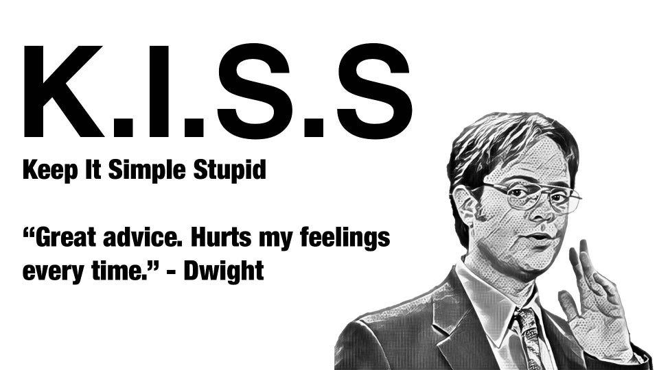
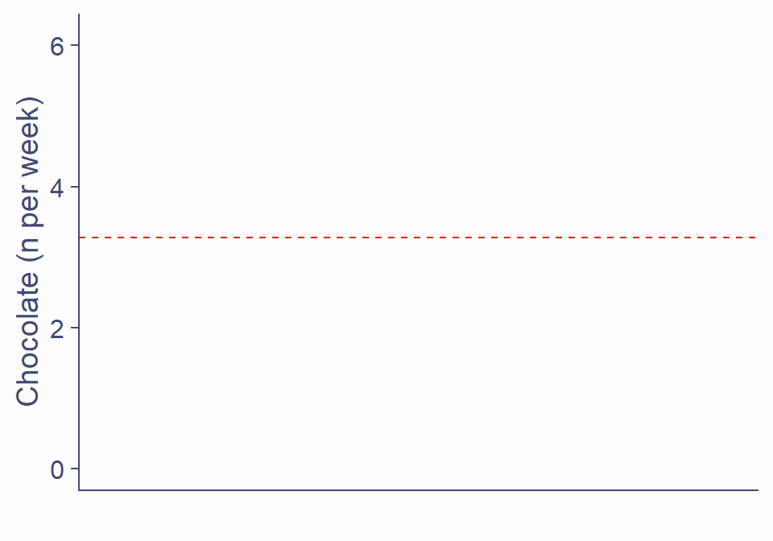
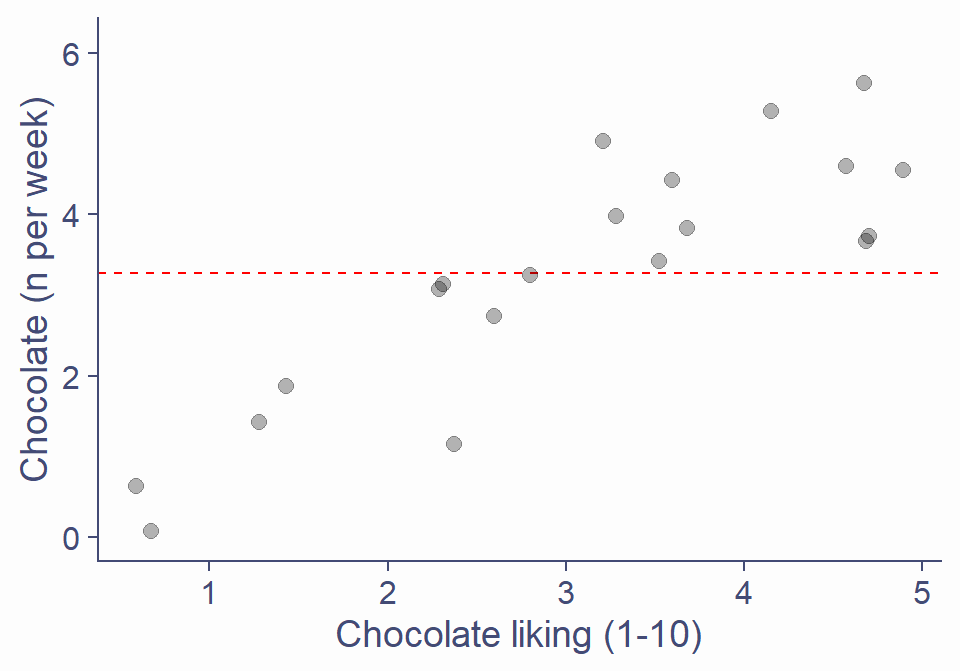
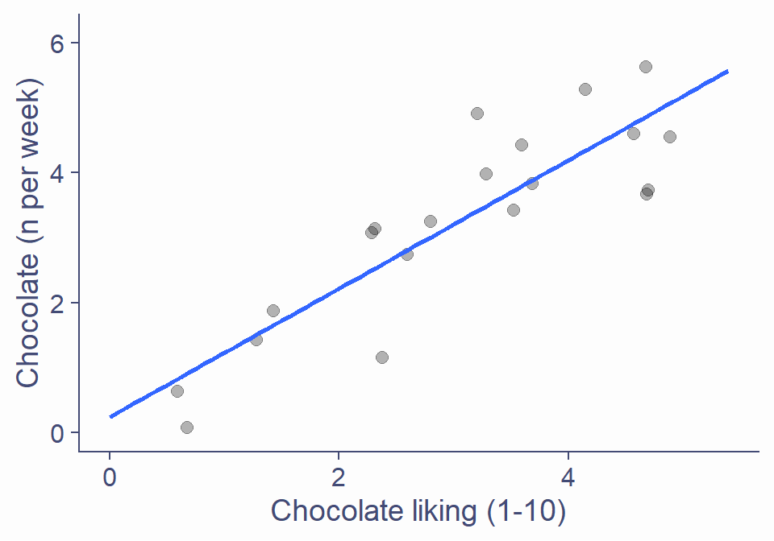
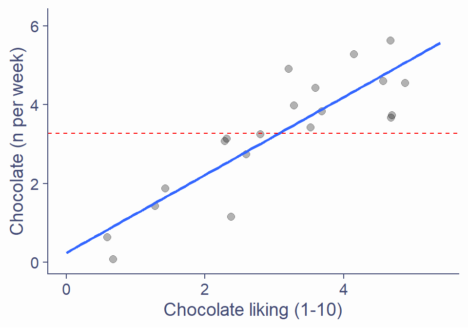
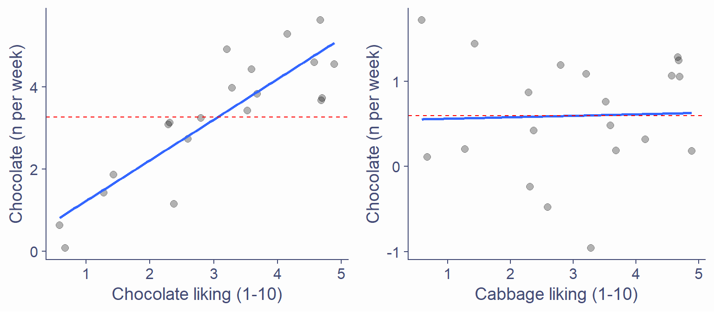
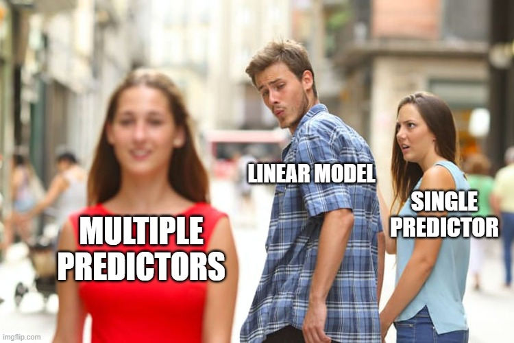
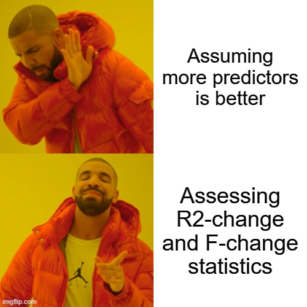

Lecture 9: Extending the Linear Model
Analysing Data
Rebecca Atkinson
Click for handout
Overview
Overview
- Week 8: The Linear Model
- TODAY: The Linear Model with multiple predictors
- [3 weeks for Spring vacation]
- Week 10: Effect sizes
- Week 11: Consolidation
RECAP
- Trying to make predictions about the world using linear models
- Fit a line to capture the relationship between predictor & outcome
- Linear model (line) is described by an intercept (b0) and a slope (b1)
\[Outcome = b_0 + b_1\times Predictor_1 + \varepsilon\]
- The outcome ‘starts’ at b0
- The outcome will increase by b1 for every unit change in predictor 1
- Always some error in model
- Use the model to see:
- R2: proportion of variance in outcome that model explains
- t-statistic and associated p-value: is b1 different from 0?
- Direction of relationship between predictor/outcome (positive/negative)
Today’s Topics
- How good is our model?
- Our model vs the mean
- Error in the model
- Throwing more predictors into the mix
- Comparing hierarchical models
- Comparing predictors in a model
- Bringing it all together: what can our model tell us?
How good is our model?
- How do we tell?
- R2: what (proportion of variance) can our model explain
- How much better is our model than the simplest model possible?
- How much error in prediction is there in our model?
Keep is simple, stupid: The mean model

- We want a linear model that explains more than the simplest model possible
- The simplest model we can use is the mean…
- Mean chocolate bars eaten per week is 3.27
- Predict how much chocolate your neighbour eats a week… you’d predict 3.27 bars!
Keep is simple, stupid: The mean model
- Let’s plot this
- Chocolate eaten is our outcome variable, predicted from the mean: 3.27
- Not a great model!

Keep is simple, stupid: The mean model
- Let’s add a predictor
- Liking along x axis
- Error between prediction (using mean) and observed data (actual scores)

Keep is simple, stupid: The mean model
- Let’s add a predictor
- Liking along x axis
- Error between prediction (using mean) and observed data (actual scores)

We can do better, probably…
- Let’s construct a linear model between chocolate liking and eating
- The line that explains our data with as little error as possible
- Compare that to the line representing our mean model
- Very different!

We can do better, probably…
- Let’s construct a linear model between chocolate liking and eating
- The line that explains our data with as little error as possible
- Compare that to the line representing our mean model
- Very different!

- Shows the improvement in prediction of the outcome from fitting a linear model
- A larger difference = a greater improvement!
- We want a linear model that explains more than the simplest model - the mean model

Interim summary
- Is our linear model is better than the simplest model possible?
- The mean model is the simplest model we can fit to our data
- We want a linear model that predicts the outcome better than the mean model
- Difference between linear model & mean model = improvement
- The mean model is the simplest model we can fit to our data
- A linear model better than the mean still contains error in prediction
- But…how much error is still in the model?
- Does the model explain more than it doesn’t explain?
- How well does the linear model predict the outcome
Error in the model
- We now know whether the linear model we fitted is better than the mean model
- But there will still be error in the model
- Fit a line to best capture the relationship between predictors and outcome
- In the real world, no model will fit the data perfectly
- Want the least error possible between the predicted and observed points
Error in the model
- Let’s look at how much error our linear model contains
Bringing it all together: the F-statistic
- Conceptually, we now have what we need for the F-statistic:
\[F =\frac{what\ the model\ can\ explain\ (compared\ to\ the\ worst\ model)}{what\ the\ model\ cannot\ explain\ (error\ left\ in\ model)}=\frac{signal}{noise}\]
- Signal = the improvement in variance explained by the model (vs the mean-model)
- How much variance the model explains
- We want this to be as big as possible
- Noise = the varience unexplained by the model
- The error our model cannot explain
- We want this to be as small as possible
Bringing it all together: the F-statistic
- A ratio of variance explained relative to varience unexplained
- If the ratio > 1, our model can explain more than it cannot explain
- The associated p-value tells us the probability of getting an F-statistic at least that large if fitting our model did not improve our ability to predict the outcome variable
Why you gotta complicate things?

- First, multiple predictors are not much more complicated!
- We build models to try and predict what is happening in the world
- Simple explainations for complex relationships?
- Multiple predictors = greater explanatory power
How multiple predictors (don’t really) change the equation
\[\begin{aligned}Outcome &= Model + Error\\ Y&=b+0 + b_1\times Predictor_1 + \varepsilon\\ &=b+0 + b_1\times Predictor_1 + b_2\times Predictor_2 + \varepsilon\end{aligned}\]
- Y: outcome
- b0: value of outcome when predictors are 0 (the intercept)
- b1: change in outcome associated with a unit change in predictor 1
- b2: change in outcome associated with a unit change in predictor 2
How multiple predictors (don’t really) change the linear model equation
- 1 predictor linear model = regression line
- 2+ predictor model = regression plane

Predicting “bullshit receptivity”

“Attention and intention are the mechanics of manifestation”
“Hidden meaning transforms unparalleled abstract beauty”
“Unparalleled transforms meaning beauty hidden abstract” ~Deepak Chopra
Predicting “bullshit receptivity”
\[\begin{aligned}bullshit\ receptivity\ = &\ b_0 + b_1\times paranormal\ beliefs\ +\\ &\ b_2\times alternative\ medicine + \varepsilon\end{aligned}\]
- Y: bullshit receptivity
- b0: value of bullshit receptivitywhen paranormal beliefs and alternative medicine are 0 (the intercept)
- b1: change in bullshit receptivity associated with a unit change in paranormal beliefs when alternative medicine beliefs is 0
- b2: change in bullshit receptivity associated with a unit change in alternative medicine beliefs when paranormal beliefs is 0
Predicting “bullshit receptivity”
bullshit.model <- lm(BSR ~ PB + CAM, data = bullshit, na.action = na.exclude)
broom::glance(bullshit.model)
# A tibble: 1 x 11
r.squared adj.r.squared sigma statistic p.value df logLik AIC BIC
<dbl> <dbl> <dbl> <dbl> <dbl> <int> <dbl> <dbl> <dbl>
1 0.0966 0.0943 0.952 42.6 2.66e-18 3 -1094. 2196. 2215.
# ... with 2 more variables: deviance <dbl>, df.residual <int>- The F-statistic is 42.59
- The associated p-value is < .001
- This means that adding predictors to the mean model significantly improved the fit of our model
- We were able to explain significantly more variance in our outcome than we were not able to explain
Predicting “bullshit receptivity”
bullshit.model <- lm(BSR ~ PB + CAM, data = bullshit, na.action = na.exclude)
broom::glance(bullshit.model)
# A tibble: 1 x 11
r.squared adj.r.squared sigma statistic p.value df logLik AIC BIC
<dbl> <dbl> <dbl> <dbl> <dbl> <int> <dbl> <dbl> <dbl>
1 0.0966 0.0943 0.952 42.6 2.66e-18 3 -1094. 2196. 2215.
# ... with 2 more variables: deviance <dbl>, df.residual <int>- The R2 is 0.1
- This means 10% of the variance in bullshit receptivity ratings was explained by paranormal belief and complementary and alternative medicine belief ratings
- This is just in our observed data!
- Our adjusted R2 value was 0.094
- If we used the same model with the population, we should be able to explain 9.4% of the variance in bullshit receptivity
Interim summary, mark II
- The linear model can be expanded to include additional predictors
- The model is still described by an intercept (b0) but now includes slopes (bs) for each predictor
- This creates a regression plane instead of a line
- We can assess how good this model is
- F-ratio and associated p-value
- R2
- What if we want to compare two models, to see which better explains varience in our outcome?
Comparing hierarchical models
- We can compare models with different numbers of predictors
- See which model better captures our outcome
- We looked at how we can compare a simple model (the mean) and a more complex model (the linear model)
- Can also compare simpler linear models and more complex linear models
- But the models must be ‘hierarchical’
- 2nd model has the same predictors as the 1st model plus extra
- 3rd model has the same predictors as the 2nd model plus extra
Predicting impulse control from bladder fullness

Model 1:
\[impulse\ control = b_0 + b_1\times bladder\ fullness + \varepsilon\]
Model 2:
\[impulse\ control = b_0 + b_1\times bladder\ fullness + b_2\times inhibition + \varepsilon\]
Predicting impulse control from bladder fullness
- Y: impulse control
- b0: value of impulse control when bladder fullness and inhibition are 0 (the intercept)
- b1: change in impulse control associated with a unit change in bladder fullness when inhibition is 0
- b2: change in impulse control associated with a unit change in inhibition when bladder fullness is 0
Predicting impulse control from bladder fullness
eg3.mod1.lm <- lm(impulse ~ bladder, data = eg3.data.tib)
eg3.mod2.lm <- lm(impulse ~ bladder + inhibition, data = eg3.data.tib)- First, which is the better model?
- Second, how useful is the best model?
With great (predictive) power comes great responsibility
- Need to assess which is the best model
- Want to compare Model 1 (1 predictor) and Model 2 (2 predictors)
- See the amount of improvement from adding extra predictors into the model
- Look at R2-change and F-change
With great (predictive) power comes great responsibility

R2-change
Model 1:
broom::glance(eg3.mod1.lm)
# A tibble: 1 x 11
r.squared adj.r.squared sigma statistic p.value df logLik AIC BIC
<dbl> <dbl> <dbl> <dbl> <dbl> <int> <dbl> <dbl> <dbl>
1 0.659 0.641 2.65 34.9 1.37e-5 2 -46.8 99.6 103.
# ... with 2 more variables: deviance <dbl>, df.residual <int>
Model 2:
R2-change
- The R2 for Model 1 is 0.66
- 66% of the variance in impulse control is explained by bladder fullness)
- The R2 for Model 2 is 0.97
- 97% of the variance in impulse control is explained by bladder fullness and inhibition).
R2-change
- We can calculate the change in R2 between Model 1 and Model 2
- 0.97 - 0.66 = 0.31
- So Model 2 explains 31% more variance than Model 1
- Adding an extra predictor to the model, inhibition, allowed us to account for 31% more variance in impulse control than bladder fullness alone
F-change
eg3.anova <- anova(eg3.mod1.lm,eg3.mod2.lm) %>% broom::tidy()
eg3.anova
# A tibble: 2 x 6
res.df rss df sumsq statistic p.value
<dbl> <dbl> <dbl> <dbl> <dbl> <dbl>
1 18 126. NA NA NA NA
2 17 9.73 1 117. 204. 6.76e-11- Is there an improvement in the variance in the outcome explained by Model 2 compared to Model 1?
- Does adding more predictors significantly improve the fit of the model?
- The F-change statistic (under “statistic”!) is 203.86 and has a p-value of < .001
F-change
- This means that Model 2 (with bladder fullness and inhibition as predictors) was significantly better at explaining variability in impulse control than Model 1 (with only bladder fullness as a predictor)
Relative contribution of predictor variables
- Now we know Model 2 is the best model…
- Which predictors explain most variance in the outcome variable?
- Assess the relative contribution of our predictor variables
- Look at the b-values and associated p-values for each predictor
Relative contribution of predictor variables
broom::tidy(eg3.mod2.lm, conf.int = TRUE)
# A tibble: 3 x 7
term estimate std.error statistic p.value conf.low conf.high
<chr> <dbl> <dbl> <dbl> <dbl> <dbl> <dbl>
1 (Intercept) 0.633 0.396 1.60 1.28e- 1 -0.202 1.47
2 bladder 0.909 0.0735 12.4 6.36e-10 0.754 1.06
3 inhibition 1.38 0.0966 14.3 6.76e-11 1.18 1.58- bladder fullness significantly predicted impulse control
- The b for bladder fullness is a positive value: as bladder fullness increases, impulse control increases (a positive relationship)
- For every unit increase in bladder fullness, impulse control increases by 0.91 units (when all other predictors are held constant)
Relative contribution of predictor variables
broom::tidy(eg3.mod2.lm, conf.int = TRUE)
# A tibble: 3 x 7
term estimate std.error statistic p.value conf.low conf.high
<chr> <dbl> <dbl> <dbl> <dbl> <dbl> <dbl>
1 (Intercept) 0.633 0.396 1.60 1.28e- 1 -0.202 1.47
2 bladder 0.909 0.0735 12.4 6.36e-10 0.754 1.06
3 inhibition 1.38 0.0966 14.3 6.76e-11 1.18 1.58- inhibition significantly predicted impulse control
- The b for inhibition is a positive value: as inhibition increases, impulse control increases (a positive relationship)
- For every unit increase in inhibition, impulse control increases by 0.91 units (when all other predictors are held constant)
Relative contribution of predictor variables
- We CANNOT interpret this to mean that inhibition caused impulse control to increase by a greater amount than each unit increase in bladder fullness
- bladder fullness and inhibition were measured in different units
- We can only compare the relative contribution of predictors measured in the same unit (e.g. cm or £)
Relative contribution of predictor variables
- Instead, we need to look at standardized versions of our betas
- These are measured in standard deviations
- Remember: \(impulse\ control = b_0 + b_1\times bladder\ fullness + b_2\times inhibition + \varepsilon\)
- unstandardized b1 is the number of units that impulse control increases for every unit increase in bladder fullness
- standardized b1 is the number of standard deviations (SDs) that impulse control increases for every standard deviation increase in bladder fullness
Relative contribution of predictor variables
lm.beta::lm.beta(eg3.mod2.lm)
Call:
lm(formula = impulse ~ bladder + inhibition, data = eg3.data.tib)
Standardized Coefficients::
(Intercept) bladder inhibition
0.0000000 0.5397408 0.6232819 - The standardized beta for bladder fullness (standardized b1) is 0.54
- As bladder fullness increases by 1 SD, impulse control increases by 0.54 SDs
- The standardized beta for inhibition (standardized b2) is 0.62
- As inhibition increases by 1 SD, impulse control increases by 0.62 SDs
Relative contribution of predictor variables
lm.beta::lm.beta(eg3.mod2.lm)
Call:
lm(formula = impulse ~ bladder + inhibition, data = eg3.data.tib)
Standardized Coefficients::
(Intercept) bladder inhibition
0.0000000 0.5397408 0.6232819 - The influence of both predictors on the outcome (bs) are now measured in the same unit (SDs)
- We can directly compare their relative contribution
- 0.62 is larger than 0.54
- So each SD increase in inhibition predicts a larger SD increase in impulse control than each SD increase in bladder fullness
Interim summary, the third of its name
- We can directly compare linear models that are hierarchical
- The second model has the same predictors as the first plus extra
- The third model has the same predictrs as the second plus extra
- We can use statistics to see whether additional predictors:
- Change the proportion of variance explained in the outcome (R2 change)
- Explain significantly more variability with less error (F-change and associated p-value)
- We can see which variables:
- Significantly predicted the outcome (t-statistic and associated p-value) and by how much (bs)
- Contributed most to variablity in the outcome (standardized bs)
Putting it all into practice
- Lets go through one more example

Putting it all into practice

Putting it all into practice

Model 1
\[happiness = b_0 + b_1\times puppies + \varepsilon\]
- Y: happiness
- b0: value of happiness when puppies is 0 (the intercept)
- b1: change in happiness associated with a unit change in puppies
Model 2
\[happiness = b_0 + b_1\times puppies + b_2\times dirt + b_3\times wet + \varepsilon\]
- Y: happiness
- b0: value of happiness when puppies and dirt and wet are 0 (the intercept)
- b1: change in happiness associated with a unit change in puppies when dirt and wet are 0
- b2: change in happiness associated with a unit change in dirt when puppies and wet are 0
- b3: change in happiness associated with a unit change in wet when puppies and dirt are 0
Da code
- Run hierarchical models
- Assess whether either model is better than the mean model (without too much error):
- F-statistic and associated p-value
- Assess which is better model
- R2-change, F-change statistic and associated p-value
- Assess which variables significantly predict the outcome
- t-value and associated p-value
- Assess which variables have largest contribution to the outcome
- Standardized bs
Da code
Model fit
Model 1:
broom::glance(eg4.mod1.lm)
# A tibble: 1 x 11
r.squared adj.r.squared sigma statistic p.value df logLik AIC BIC
<dbl> <dbl> <dbl> <dbl> <dbl> <int> <dbl> <dbl> <dbl>
1 0.680 0.662 1.66 38.2 7.77e-6 2 -37.5 81.0 83.9
# ... with 2 more variables: deviance <dbl>, df.residual <int>- As the p-value associated with the F-statistic for Model 1 is significant, we can infer that the probability of getting an F-statistic of 38.23 or larger if the null hypothesis is ‘true’ is sufficiently unlikely, and that Model 1 is likely to be better than the mean-model (a model with no predictors)
Model fit
Model 2:
broom::glance(eg4.mod2.lm)
# A tibble: 1 x 11
r.squared adj.r.squared sigma statistic p.value df logLik AIC BIC
<dbl> <dbl> <dbl> <dbl> <dbl> <int> <dbl> <dbl> <dbl>
1 0.965 0.958 0.583 147. 7.40e-12 4 -15.3 40.7 45.7
# ... with 2 more variables: deviance <dbl>, df.residual <int>- As the p-value associated with the F-statistic for Model 2 is significant, we can infer that the probability of getting an F-statistic of 147.04 or larger if the null hypothesis is ‘true’ is sufficiently unlikely, and that Model 1 is likely to be better than the mean-model (a model with no predictors)
Which is better model?
eg4.anova <- anova(eg4.mod1.lm, eg4.mod2.lm) %>%
broom::tidy() #needs to be written nicer with names- The F-change statistic is 65.17 and has a p-value of < .001
- This means that Model 2 (with puppies, dirt, and wet as predictors) was significantly better at explaining variability in happiness than Model 1 (with only puppies as a predictor)
Which is better model?
eg4.anova <- anova(eg4.mod1.lm, eg4.mod2.lm) %>%
broom::tidy() #needs to be written nicer with names- I.e., there is < .001 probabilty of getting an F-change statistic at least as large as 65.17 if the null hypothesis (there is no improvement in [the varience in the outcome] explained by Model 2 compared to Model 1) is true
Did any variables significantly predict the outcome?
broom::tidy(eg4.mod2.lm, conf.int = TRUE)
# A tibble: 4 x 7
term estimate std.error statistic p.value conf.low conf.high
<chr> <dbl> <dbl> <dbl> <dbl> <dbl> <dbl>
1 (Intercept) 3.74 0.438 8.55 2.33e- 7 2.81 4.67
2 puppies 0.995 0.0566 17.6 7.01e-12 0.875 1.11
3 dirt -0.219 0.0744 -2.95 9.43e- 3 -0.377 -0.0617
4 wet -0.796 0.0726 -11.0 7.59e- 9 -0.950 -0.642 - puppies significantly predicted happiness (at < .001)
- The beta (b1) for puppies (0.99) is a positive value: as puppies increases, happiness increases (a positive relationship)
- For every unit increase in puppies, happiness increases by 0.99 units (when all other predictors are held constant)
Did any variables significantly predict the outcome?
broom::tidy(eg4.mod2.lm, conf.int = TRUE)
# A tibble: 4 x 7
term estimate std.error statistic p.value conf.low conf.high
<chr> <dbl> <dbl> <dbl> <dbl> <dbl> <dbl>
1 (Intercept) 3.74 0.438 8.55 2.33e- 7 2.81 4.67
2 puppies 0.995 0.0566 17.6 7.01e-12 0.875 1.11
3 dirt -0.219 0.0744 -2.95 9.43e- 3 -0.377 -0.0617
4 wet -0.796 0.0726 -11.0 7.59e- 9 -0.950 -0.642 - dirt significantly predicted happiness (at = .009)
- The beta (b1) for dirt (-0.22) is a negative value: as dirt increases, happiness decreases (a negative relationship)
- For every unit increase in dirt, happiness decreases by -0.22 units (when all other predictors are held constant)
Did any variables significantly predict the outcome?
broom::tidy(eg4.mod2.lm, conf.int = TRUE)
# A tibble: 4 x 7
term estimate std.error statistic p.value conf.low conf.high
<chr> <dbl> <dbl> <dbl> <dbl> <dbl> <dbl>
1 (Intercept) 3.74 0.438 8.55 2.33e- 7 2.81 4.67
2 puppies 0.995 0.0566 17.6 7.01e-12 0.875 1.11
3 dirt -0.219 0.0744 -2.95 9.43e- 3 -0.377 -0.0617
4 wet -0.796 0.0726 -11.0 7.59e- 9 -0.950 -0.642 - wet significantly predicted happiness (at < .001)
- The beta (b1) for wet (-0.8) is a negative value: as wet increases, happiness decreases (a negative relationship)
- For every unit increase in wet, happiness decreases by -0.8 units (when all other predictors are held constant)
Relative contribution of predictors
lm.beta::lm.beta(eg4.mod2.lm)
Call:
lm(formula = happiness ~ puppies + dirt + wet, data = eg4.data.tib)
Standardized Coefficients::
(Intercept) puppies dirt wet
0.0000000 0.9137579 -0.1533856 -0.5131205 - The standardized beta for puppies (standardized b1) is 0.91
- So as puppies increases by 1 standard deviation, happiness increases by 0.91 standard deviations
Relative contribution of predictors
lm.beta::lm.beta(eg4.mod2.lm)
Call:
lm(formula = happiness ~ puppies + dirt + wet, data = eg4.data.tib)
Standardized Coefficients::
(Intercept) puppies dirt wet
0.0000000 0.9137579 -0.1533856 -0.5131205 - The standardized beta for dirt (standardized b2) is -0.15
- So as dirt increases by 1 standard deviation, happiness decreases by -0.15 standard deviations
Relative contribution of predictors
lm.beta::lm.beta(eg4.mod2.lm)
Call:
lm(formula = happiness ~ puppies + dirt + wet, data = eg4.data.tib)
Standardized Coefficients::
(Intercept) puppies dirt wet
0.0000000 0.9137579 -0.1533856 -0.5131205 - The standardized beta for wet (standardized b3) is -0.15
- So as wet increases by 1 standard deviation, happiness decreases by -0.15 standard deviations
Relative contribution of predictors
lm.beta::lm.beta(eg4.mod2.lm)
Call:
lm(formula = happiness ~ puppies + dirt + wet, data = eg4.data.tib)
Standardized Coefficients::
(Intercept) puppies dirt wet
0.0000000 0.9137579 -0.1533856 -0.5131205 - Now the influence of all predictors on the outcome (bs) are measured in the same unit - standard deviations - so we can directly compare their relative contribution within the model
- 0.91 is the largest standardized beta, so each standard deviation increase in puppies predicts a larger change in happiness than the change in standard deviations in happiness attributable to the other predictors in Model 2.
Summary
- The linear model captures the relationship between at one or more predictors, x, and an outcome, y
- Linear model equation: Outcome = b0 + b1 × Predictor 1 + b2× Predictor 2 + bn × Predictor n… + Error
- Is our model useful? Assess model fit:
- F-statistic (or F-change) and associated p-value
- R2 (or R2-change)
- What does our model tell us?
- Unstandardized bs, t-statistic and associated p-value
- Standardized bs